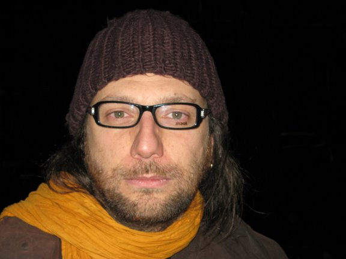

Vieri del Bianco
|  |
Vieri del Bianco graduated in 1999 from Università di Firenze with a full degree (bachelor plus first level master equivalent) in Electronical Engineering with Information Technology specialization. From 1999 to 2000 he attended a second level master on Information Technology with Software Engineering specialization at CEFRIEL, a research focused non profit institution associated with Politecnico di Milano. At the end of the master it was offered to remain in CEFRIEL. From 2000 to 2006 he worked in CEFRIEL. He obtained a PhD on Software Engineering focusing on Real-Time embedded system modelling and formal verification at Politecnico di Milano. He worked in different projects in different areas which include: verification of embedded system, Java development, Python development, development processes and project management, agile methodologies, requirements gathering. From 2006 to 2008 he worked in Univeristy of Insubria as a researcher and contract professor. He worked on QualiPSo project (Trust and Quality on Free and Open Source systems), he also focused on Distributed Systems, Agile processes, software metrics and measures, requirements engineering. In 2009 he joined KindSoft group were it actually works. He is involved in SenseTile (Wirelss Multimedia Sensor Networks) project. |